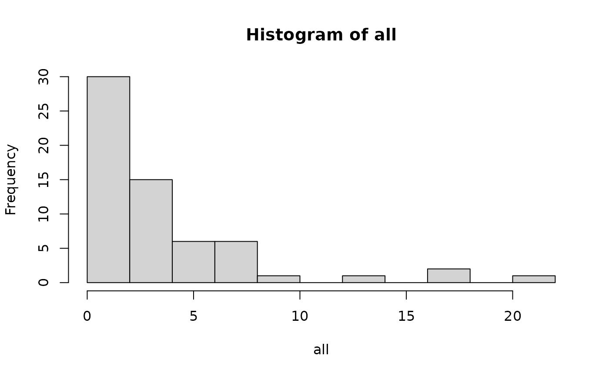
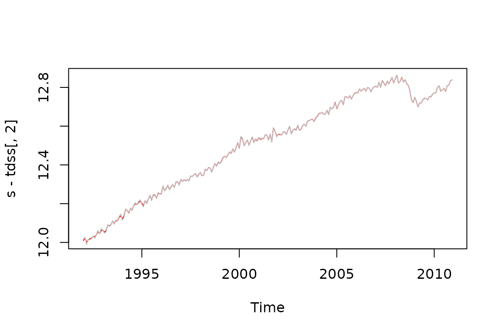
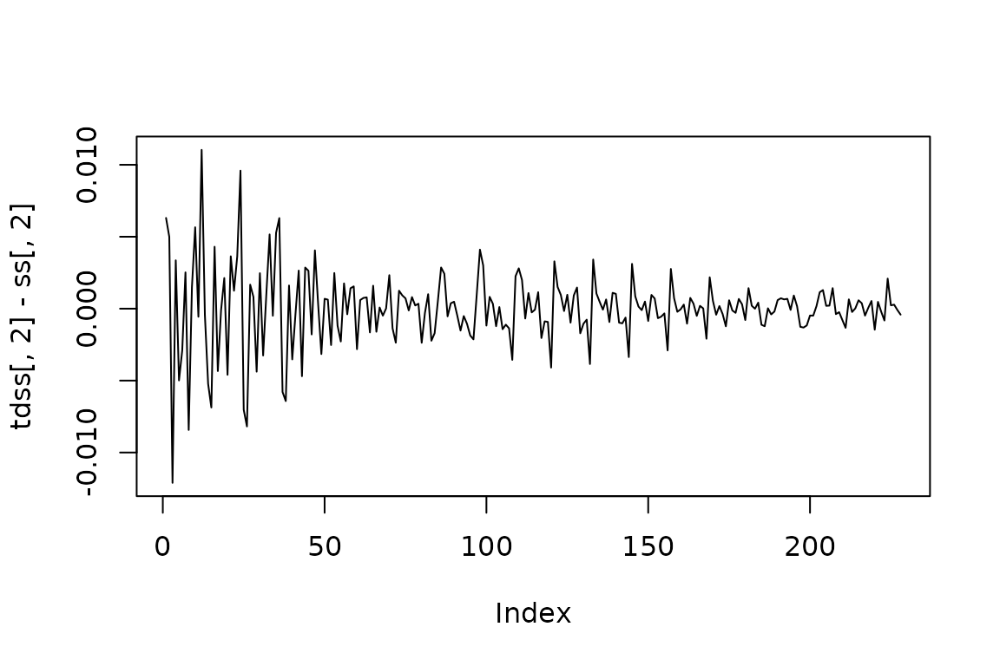

Introduction
This document presents some results on time dependent arima models developed by G. Melard, as they are implemented in JDemetra+ The current implementation focuses on airline models.
Estimation of time-dependent airline models
The likelihood ratios between time-dependent and normal airline models computed on 63 series of the US-retail trade statistics are presented below. Likelihood ratios above 4 indicate a significant preference for the time-dependent models.
test<-function(z){
q<-rjd3sts::tdairline_estimation(z)
return (q$ltd_sarima$likelihood- q$sarima$likelihood)
}
all<-sapply(rjd3toolkit::Retail, function(z) test(z))
hist(all, breaks=10)
print(all)
#> AllOtherGenMerchandiseStores AllOtherHomeFurnishingsStores
#> 0.2599687 1.8073763
#> AppltvAndOtherElectStores AutomobileDealers
#> 2.6904441 7.5012325
#> BeerWineAndLiquorStores BookStores
#> 1.4763512 2.4879537
#> BuildingMatAndGardenEquipAndSupp BuildingMatAndSuppliesDealers
#> 1.8481865 0.9798839
#> ClothingAndClothingAccessStores ClothingStores
#> 3.0727796 1.9433920
#> ComputerAndSoftwareStores DepartmentStoresExclDiscountDepa
#> 0.3787791 7.2711916
#> DepartmentStoresExclLD DepartmentStoresInclLD
#> 0.8590355 0.7634333
#> DiscountDeptStoresInclLD DiscountDeptStores
#> 4.8956456 5.5606961
#> DrinkingPlaces ElectronicsAndApplianceStores
#> 0.6082423 1.7897230
#> FamilyClothingStores FloorCoveringStores
#> 5.3726852 1.5696636
#> FoodAndBeverageStores FoodServicesAndDrinkingPlaces
#> 5.9461737 0.5840378
#> FuelDealers FullServiceRestaurants
#> 0.8083703 0.2150196
#> FurnitureAndHomeFurnishingsStore FurnitureHomeFurnElectronicsAndA
#> 2.3809754 2.0432794
#> FurnitureStores Gafo
#> 1.9144394 3.8209734
#> GasolineStations GeneralMerchandiseStores
#> 13.9093037 5.9325953
#> GiftNoveltyAndSouvenirStores GroceryStores
#> 1.4066652 5.1526660
#> HardwareStores HealthAndPersonalCareStores
#> 0.9931652 7.3192726
#> HobbyToyAndGameStores HomeFurnishingsStores
#> 2.8548124 3.0032888
#> HouseholdApplianceStores JewelryStores
#> 0.6237299 1.4549538
#> LimitedServiceEatingPlaces MensClothingStores
#> 0.8227719 0.7571241
#> MiscellaneousStoreRetailers MotorVehicleAndPartsDealers
#> 0.7306779 8.6937372
#> NewCarDealers NonstoreRetailers
#> 6.6432701 0.7205383
#> OfficeSuppliesAndStationeryStore OfficeSuppliesStationeryAndGiftS
#> 2.3736957 0.2937239
#> OtherClothingStores OtherGeneralMerchandiseStores
#> 1.0651051 3.4746228
#> PaintAndWallpaperStores PharmaciesAndDrugStores
#> 0.4836048 6.8507426
#> RadioTVAndOtherElectStores RetailAndFoodServicesSalesTotal
#> 3.4329575 17.3490489
#> RetailSalesTotalExclMotorVehicle RetailSalesTotal
#> 21.4911139 17.7320144
#> ShoeStores SportingGoodsHobbyBookAndMusicSt
#> 6.3539561 2.9775295
#> SportingGoodsStores SupermarketsAndOtherGroceryExcep
#> 0.2488864 0.1707006
#> UsedCarDealers UsedMerchandiseStores
#> 3.1951571 3.1441175
#> WarehouseClubsAndSuperstores WomensClothingStores
#> 3.0298947 1.1010737Canonical decomposition and estimation of the components by means of the Kalman smoother
We present below the seasonal adjustment of a series (total retail trade) and the differences between the sa series based on the airline model and the time-dependent airline model, using the Kalman smoother
s<-log(rjd3toolkit::Retail$RetailAndFoodServicesSalesTotal)
q<-rjd3sts::tdairline_estimation(s)
print('airline')
#> [1] "airline"
print(q$sarima$likelihood)
#> [1] 520.7421
print('tdairline')
#> [1] "tdairline"
print(q$ltd_sarima$likelihood)
#> [1] 534.4724
tdss<-rjd3sts::tdairline_decomposition(s, q$ltd_sarima$th, q$ltd_sarima$bth)
air<-rjd3toolkit::sarima_model(period=12, d=1, theta=q$sarima$parameters[2],bd=1, btheta=q$sarima$parameters[3] )
ucm<-rjd3toolkit::sarima_decompose(air)
ss<-rjd3toolkit::ucarima_estimate(s, ucm)
plot(s-tdss[,2], type='l', col='red')
lines(s-ss[,2], col='gray')
plot(tdss[,2]-ss[,2], type='l')